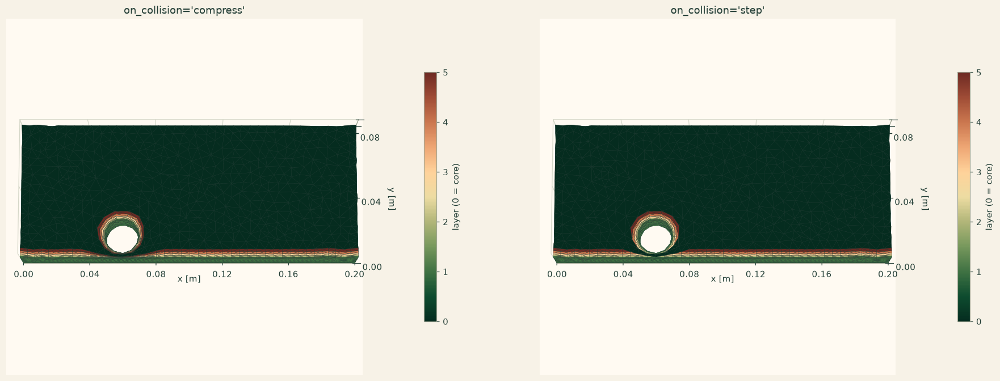

Docs › Examples › Boundary-layer meshing
Meshing · 3D
Boundary-layer meshing
The fluid around a cylinder in a duct, meshed with layers of flat cells on the cylinder and the duct walls.

What it computes
OneSimulation inserts stacks of prism-like cells into a tetrahedral mesh on selected walls, stated by count, first height and growth or four other combinations, sizes the first height from a wanted wall distance y+, and lowers or steps down the layers where the cylinder comes close to a wall.
What it checks
All five ways of stating the layers give exactly the geometric series 1, 1.5, 2.25 and 3.375 mm, the first height for y+ = 1 equals the flat-plate formula (56.750 um), every layer has 3 x 1,692 cells, the largest measured heights equal the stated ones and the layered mesh keeps the volume of the plain mesh to all digits; in the 3 mm gap compression lowers the first layer to 0.49 mm while stepping keeps 0.600 mm.
The notebook
The complete notebook, cell by cell. Run it to produce the figures and the comparison printout.
Near a wall the velocity of a flow rises from zero to the free-stream value within a thin boundary layer, and the temperature does the same in a thermal layer. Cells that are thin across the wall and wide along it resolve those gradients at a fraction of the cost of small isotropic cells. BoundaryLayers(walls=..., ...) inserts such layers into a tetrahedral mesh: every triangle of the wall is extruded into a stack of prisms, each split into three tetrahedra, and the mesh behind is pushed back.
| stated by | keywords | layer heights | |---|---|---| | count, first height, growth | count, first_height, growth | \(h_k = h_1 q^{k-1}\) | | count, total thickness, growth | count, thickness, growth | \(h_1 = H (q-1)/(q^n-1)\) | | first height, growth, last height | first_height, growth, last_height | as many as fit below \(h_\text{last}\) | | count, first height, transition | count, first_height, transition | last layer a share of the cells behind | | explicit heights | heights | as given |
Where the layers of two walls would collide in a narrow gap, on_collision="compress" lowers all layers there and "step" leaves out the outer ones.
Reference. The geometric series of the stated layers, and the first height for a wall distance \(y^+\) from the skin friction of a turbulent flat plate, \(c_f = 0.0592\,Re_L^{-1/5}\), \(u_\tau = U\sqrt{c_f/2}\), \(h_1 = 2\,y^+\nu/u_\tau\) (the first cell centre at \(y^+\); H. Schlichting, K. Gersten, Boundary-Layer Theory, 9th ed., Springer 2017, ch. 18).
import numpy as np
from onesim.cad.d3 import Box, Cylinder
from onesim.meshing import BoundaryLayers, TetrahedralMesher, first_layer_height
from onesim.meshing.quality import quality
from onesim.visualization import plots, theme
theme.set()The flow domain
A duct of 200 x 80 x 40 mm with a cylinder of 20 mm diameter across it, 60 mm from the inlet. Its wall is obstacle.outer_wall; the duct walls are y_min, y_max.
length, width, depth, radius = 0.2, 0.08, 0.04, 0.01
fluid = Box(length=length, width=width, height=depth) - Cylinder(
radius=radius, length=depth, origin=(0.06, width / 2, 0.0)
).named("obstacle")
walls = (
fluid.boundaries["obstacle.outer_wall"]
| fluid.boundaries.y_min
| fluid.boundaries.y_max
)Five ways to state the layers
All five below describe the same four layers of 1, 1.5, 2.25 and 3.375 mm, thick enough to be seen in the figures, or come as close as their keywords allow.
stated = {
"count, first height, growth": BoundaryLayers(
walls=walls, count=4, first_height=1e-3, growth=1.5
),
"count, thickness, growth": BoundaryLayers(
walls=walls, count=4, thickness=8.125e-3, growth=1.5
),
"first height, growth, last height": BoundaryLayers(
walls=walls, first_height=1e-3, growth=1.5, last_height=3.5e-3
),
"count, first height, thickness": BoundaryLayers(
walls=walls, count=4, first_height=1e-3, thickness=8.125e-3
),
"explicit heights": BoundaryLayers(
walls=walls, heights=(1e-3, 1.5e-3, 2.25e-3, 3.375e-3)
),
}
series = 1e-3 * 1.5 ** np.arange(4)
for name, layers in stated.items():
print(
f"{name:34s} {', '.join(f'{1e3 * h:.4f}' for h in layers.layer_heights())} mm"
)
print(
f"{'geometric series h1 q^(k-1)':34s} {', '.join(f'{1e3 * h:.4f}' for h in series)} mm"
)First height from y+
Air at 10 m/s along a wall of 0.2 m, \(y^+ = 1\).
viscosity, speed = 1.5e-5, 10.0
friction = lambda U, L: U * np.sqrt(0.0592 * (U * L / viscosity) ** -0.2 / 2)
print(
f"first height for y+ = 1: library {first_layer_height(1.0, kinematic_viscosity=viscosity, velocity=speed, length=length) * 1e6:.3f} um, "
f"flat-plate formula {2 * viscosity / friction(speed, length) * 1e6:.3f} um"
)The layered mesh
The first statement on all three walls; the mesh behind has cells of 5 mm. Away from corners every layer has its stated height; where the cylinder meets the floor and the lid, and where the duct walls meet them, the columns of the layers lean and are shortened, which lowers the mean.
layers = stated["count, first height, growth"]
plain = TetrahedralMesher(target_size=0.005).generate(fluid)
mesh = TetrahedralMesher(target_size=0.005, boundary_layers=(layers,)).generate(fluid)
report = mesh.layer_report
wall_triangles = sum(
len(plain.facets(fluid.boundaries[name]))
for name in ("obstacle.outer_wall", "y_min", "y_max")
)
print(
f"cells: {plain.cell_count} without layers, {mesh.cell_count} with; cells per layer "
f"{np.bincount(mesh.cell_layers)[1:].tolist()} (3 x {wall_triangles} wall triangles = {3 * wall_triangles})"
)
print("layer stated [mm] measured largest [mm] mean [mm]")
for index, (height, item) in enumerate(
zip(layers.layer_heights(), report["layer_heights"]), start=1
):
print(
f"{index:5d} {1e3 * height:12.4f} {1e3 * item['maximum']:20.4f} {1e3 * item['mean']:11.4f}"
)
print(
f"volume: plain mesh {quality(plain)['size'].sum() * 1e6:.4f} cm3, layered mesh {quality(mesh)['size'].sum() * 1e6:.4f} cm3, "
f"CAD {fluid.measure * 1e6:.4f} cm3"
)
view = plots.Camera(elevation=30, azimuth=-60)
fig = plots.figure(1, 2, size=(17, 6))
plots.geometry(
fluid,
selection={"walls with layers": walls},
labels=False,
camera=view,
title="Duct with a cylinder",
ax=fig[0],
)
plots.mesh(
mesh,
cell_values=mesh.cell_layers,
limits=(0, 4),
plane=((0.06, width / 2, depth / 2), (0.0, 0.0, 1.0)),
label="layer (0 = core)",
camera=plots.Camera(elevation=70, azimuth=-90),
title=f"Four layers on three walls: {mesh.cell_count} cells",
ax=fig[1],
)
plots.show()Narrow gaps
Moved to 3 mm from the wall y_min, the cylinder leaves too little room for five layers of 0.6 mm growing by 1.3 (5.4 mm in all). Compressed, every layer in the gap becomes thinner; stepped, the outer layers end and the first height stays.
near = Box(length=length, width=width, height=depth) - Cylinder(
radius=radius, length=depth, origin=(0.06, radius + 0.003, 0.0)
).named("obstacle")
near_walls = near.boundaries["obstacle.outer_wall"] | near.boundaries.y_min
gaps = {
mode: TetrahedralMesher(
target_size=0.005,
boundary_layers=(
BoundaryLayers(
walls=near_walls,
count=5,
first_height=6e-4,
growth=1.3,
on_collision=mode,
),
),
).generate(near)
for mode in ("compress", "step")
}
for mode, gap_mesh in gaps.items():
gap_report = gap_mesh.layer_report
print(
f"{mode:8s}: {gap_mesh.cell_count} cells, compressed points {gap_report['compressed_point_count']}, "
f"first layer mean {1e3 * gap_report['layer_heights'][0]['mean']:.4f} mm, smallest shape {quality(gap_mesh)['shape'].min():.3f}"
)Figure
The gap between cylinder and wall cut at mid-depth, with the layers compressed and stepped down.
close = plots.Camera(elevation=80, azimuth=-90)
fig = plots.figure(1, 2, size=(17, 6))
for index, (mode, gap_mesh) in enumerate(gaps.items()):
plots.mesh(
gap_mesh,
cell_values=gap_mesh.cell_layers,
limits=(0, 5),
plane=((0.06, 0.006, depth / 2), (0.0, 0.0, 1.0)),
label="layer (0 = core)",
camera=close,
title=f"on_collision='{mode}'",
ax=fig[index],
)
plots.show()Going further
Size the layers for a turbulent wall with wall_layers(walls, velocity=..., length=..., kinematic_viscosity=...), put layers on a planar mesh (TriangularMesher(boundary_layers=...)), or solve the flow round the cylinder on mesh with onesim.physics.hydrodynamics.